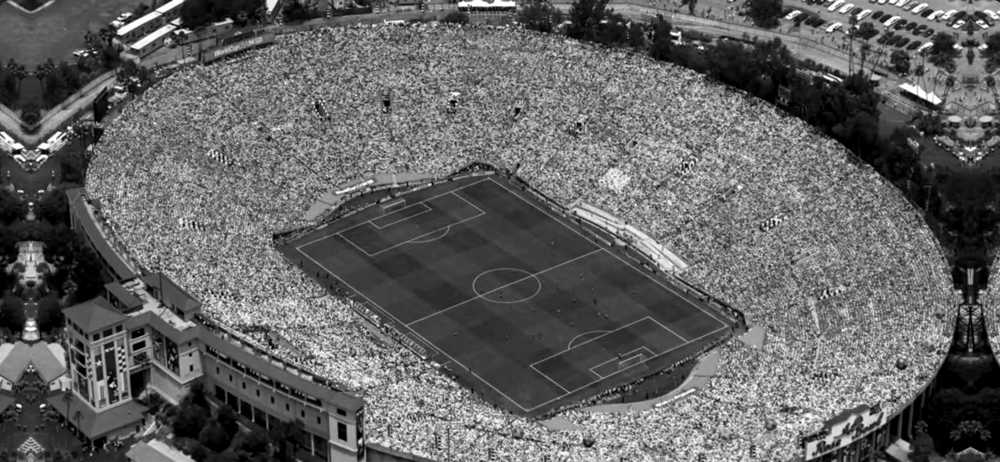

[ Jugador ]
Nombre
Descripción.

Foto libro de historias emblemáticas de algunos de los mejores jugadores, antes, durante y Post Mundial USA 94. Se abordan tres tópicos: las adicciones de Diego Maradona, la salud mental de Roberto Baggio tras la final del Mundial y el secuestro del padre de Romário meses antes de comenzar el torneo. A través de estas historias buscamos mostrar el lado humano de tres de los mejores futbolistas de su generación, considerando su carrera deportiva dentro de la cancha pero también poniendo un énfásis de lo que ocurrió dentro de la cancha. Nuestro concepto se ve aplicado en la mínima calidad de las fotografías, generando un contraste con el propio formato de foto libro, mientras el objeto celebra la imagen,
el contenido visual se presenta deliberadamente degradado, como un eco de los recuerdos y de la forma en que estas historias fueron registradas en su momento. Nos apoyamos en la idea de la "imagen pobre" que plantea Hito Steyerl: una imagen de baja resolución no es una imagen fallida, sino una que prioriza la circulación y el acceso por sobre la nitidez, y que lleva impresa en su propia textura la huella de su recorrido. Así, el grano y la pérdida de definición no son un defecto técnico, sino parte del contenido: la imagen imperfecta como testimonio de una memoria colectiva, transmitida y repetida hasta desgastarse, tal como estas historias fueron vistas y recordadas por generaciones de hinchas.
[ Jugador ]
Descripción.
[ Contacto ]
Escríbenos si quieres saber más sobre nuestro trabajo, proponer una colaboración o simplemente comentar algo sobre el proyecto :)